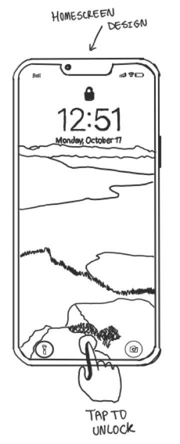

Demo Video
Project Details
This time we designed two phone unlock interfaces. Origami Unlock: Our first design approach was touch-based. The idea was to allow users to open their phones with a sequence of origami folds as passwords. Dotted lines represent folding locations on the paper. They divide the paper into separate buttons. Hitting the wrong button or a button in the wrong sequence starts the unlock process over. Every correct selection leads to an animation that shows the paper folded over where the dotted line was.The password entry completes after the last fold, showing the completed origami figure for a moment. Then the phone unlocks.
How and why we came up with it
We started with each of us coming up with 10 initial sketches for our ideas. We discussed them with one another and the origami idea was an easy favorite. Most people aren’t familiar enough with origami to guess a password based on the correct fold sequence. So we figured it's actually a pretty good idea for a phone unlock interface. Someone trying to break into the user's phone wouldn’t even know the shape they’re going for. It would be fully secure with limited attempts and customizable origami shapes but we kept it simple to keep the focus on showing the design and idea.
Detailed Sketches
{kind=link}
To avoid accidental unlocks we decided to add a feature that requires the user to swipe the screen upwards to begin unlocking the phone. This serves as the homescreen where the user can receive notifications and check the time as they normally can.
{kind=link}
After unlocking, the user's chosen password origami is displayed in its unfolded state. The fold lines for the first step are shown on the shape. Choose the right side to fold.
{kind=link}
After choosing the correct side, the process moves to step 2 of a given origami password. Choose the correct side to move onto step 3.
{kind=link}
Choosing the correct side shows the resulting shape with the paper folder over the line. Choosing the wrong side to fold at any moment throughout the unlock process restarts the whole process.
{kind=link}
Another correct selection! It is beginning to take a familiar shape.
{kind=link}
Make another correct fold. Any incorrect selection results in the whole process restarting.

After the final correct fold has been completed, the origami shape displays its figure for a moment before the phone unlocks.
{kind=link}
We decided to add a scenic background to create an atmosphere for folding origami. Our idea for the design was to separate the unlock process into states. Each correct fold selection leads to the next state, while any incorrect selection returns the process to the first state.
{kind=link}
This sketch shows the process returning the screen to the first state after an incorrect selection.
{kind=link}
We decided to add a face to our final origami design. This is a satisfying conclusion for the user after they have completed their password. The display pauses for a moment and then the phone unlocks.
Concept Sketches
While deciding on how we should design our touch-based unlock system. We had initially come up with 10 designs, those being a higher or lower game, a drawing unlock, an invisible section unlock, connect the dots, shape memory, origami, prompt answering, carry case style unlock, “Where’s Waldo?” style unlock, and a water level unlock. Out of all these ideas we eventually picked the origami unlock as it has a unique design which is visually appealing, while also having really good security as the user must know the pattern to unlock it.
{kind=link}
{kind=link}
{kind=link}
{kind=link}
{kind=link}
My Contribution
We discussed our ideas and made sketches which we sent to the group. I slowly helped develop both ideas and helped polish up the code. I also helped record the video and then did the project documentation.
Limitations and Issues
The unlock design is secure in the sense that most people don't know origami. Most default origami figures this design could provide would follow known patterns, however. If a non-authorized user decided to spy on an unlock, they could figure out the pattern from seeing the end result origami figure alone. An idea around this is to offer custom designs and fold sequences. Another issue is that someone could just guess repeatedly until they memorize the correct pattern. A password attempt limit immediately solves this issue. Accidental unlocks are extremely improbable because there are so many specific areas of the screen that must be tapped to unlock. Incorrect selections restart the process.